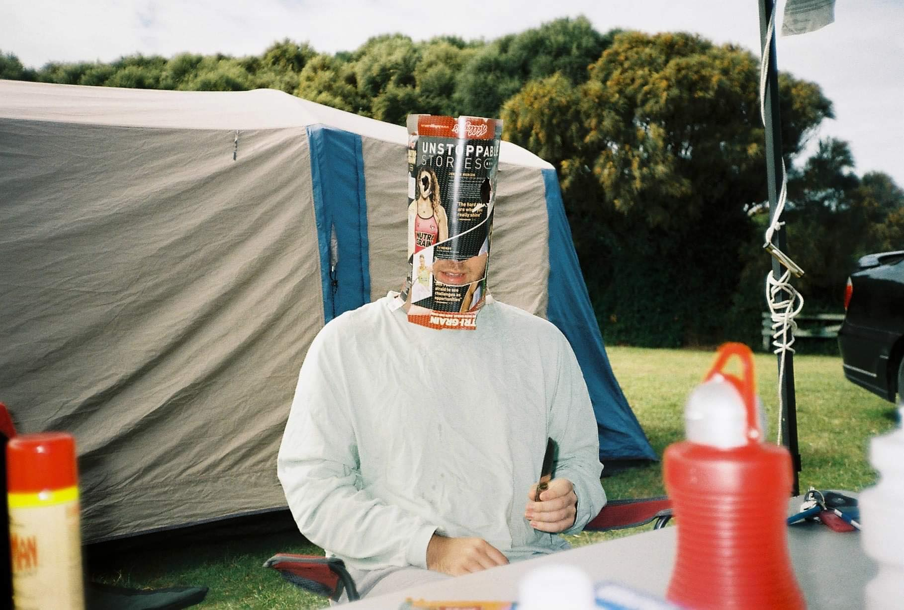
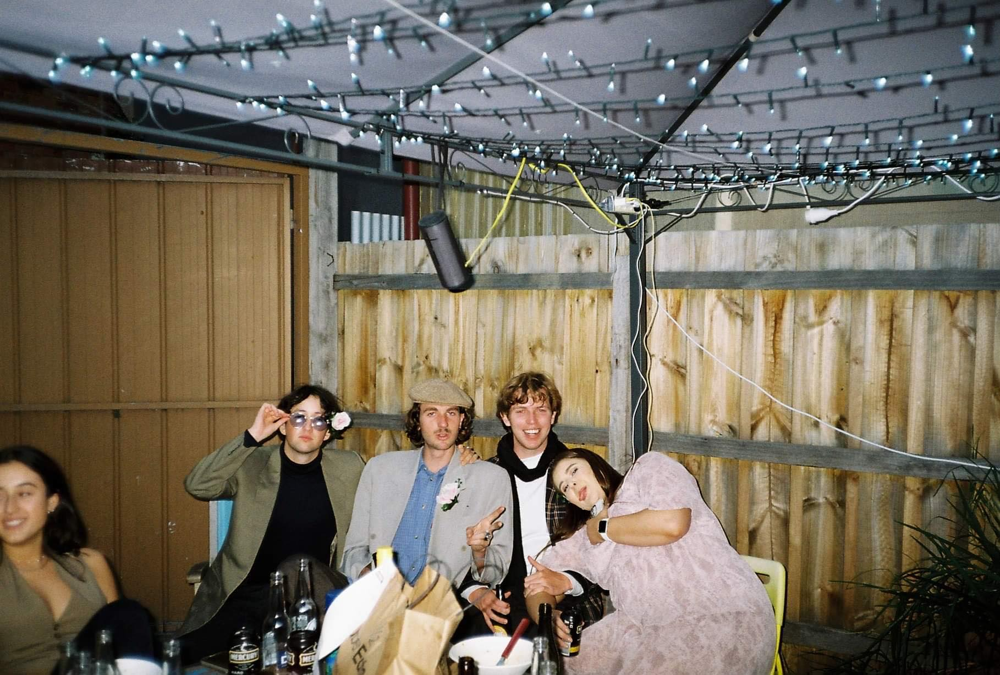

Written by Patrick John Julian
An Australian summer is djing by the campfire and seeing Paddy the peacock spread his feathers. It’s yelling hello to a paraglider drifting past the window over the ocean and cuddling up in the trees. It’s sitting on the ground outside 7-11 after watching the footy and marching bands jamming up on the tables in Hawaiian shirts. It’s walking towards a white lighthouse on a cloudless blue sky and jumping out of planes. It’s wrapping your jumper around yourself like a satchel to look cool and a black and white kitten running up your back.
An Australian summer is that pink tinge in the sky before the sunset and colourful icy poles. It’s banana paddle pops and lovers lying on the grass holding hands over their face to shield the sun. It’s putting a nutrigrain box over your face and looking like Ned Kelly and falling in love with pretty D.Js. It’s dressing up nice to go to a winery for a friend’s birthdays and painting orange sunsets and Picasso knockoffs. It’s conversations around bonfires up in the mountains and emperor gum moths landing on your neck.
An Australian summer is V.B hats and pit vipers and friends chatting and laughing at shisha bars. It’s little cousins showing off their rad new bikes and Dad revealing too much in his budgie smugglers. It’s pigs fighting each other for scraps and not letting hungry piglets get any. It’s painting old family Christmas photos and saying "are we there yet?" on family road trips. It’s veggie gardens and twin goats sleeping and the friends of Merrie Creek painting up on the wall.

An Australian summer is eating ice cream quick enough that it doesn't melt down your hands and laughing when your friends don’t succeed at it. It’s bright board shorts and stripy tees and bucket hats. It’s boogying with cousins at raves and giving a record player to your friend for his birthday. It’s kangaroos on golf courses and a joey snug in the pouch sleeping. It’s campfire smiles and tote bags and beer pong out in the sun.
An Australian summer is riding the quad bike around the dam and admiring dad’s vintage car collection in the garage. It’s sitting on the edge of the pier catching toadies and flatheads and whiting. It’s lemon trees and flashing paintings at the National Gallery of Victoria. It’s getting friends to pierce your ear and cut your hair into a mullet when your drunk.
An Australian summer is alleyways and party lights and brick walls. It’s the D.J decks blaring in the little window. It’s kick-ons at Bell Street and drip or drown competitions. It’s Peaky blinders hats and raiding grandma’s closet for dress up parties. It’s cousins on each other’s shoulders and old friends making their way to Hollywood. It’s tie die shirts and scarves and mixing champagne with orange juice.
